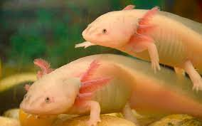

Habitad

Entre bosques de oyamel o en los humedales de Xochimilco se encuentran los arroyos y canales donde vive el ajolote, un anfibio mexicano cuya presencia indica que hay agua limpia y un ecosistema sano.
Caracteristicas
mide en promedio 23 centímetros
- su cuerpo es gelatinoso
- tiene cuatro patas
- una cola larga
- ojos pequeños y una boca grande de apariencia sonriente
menú